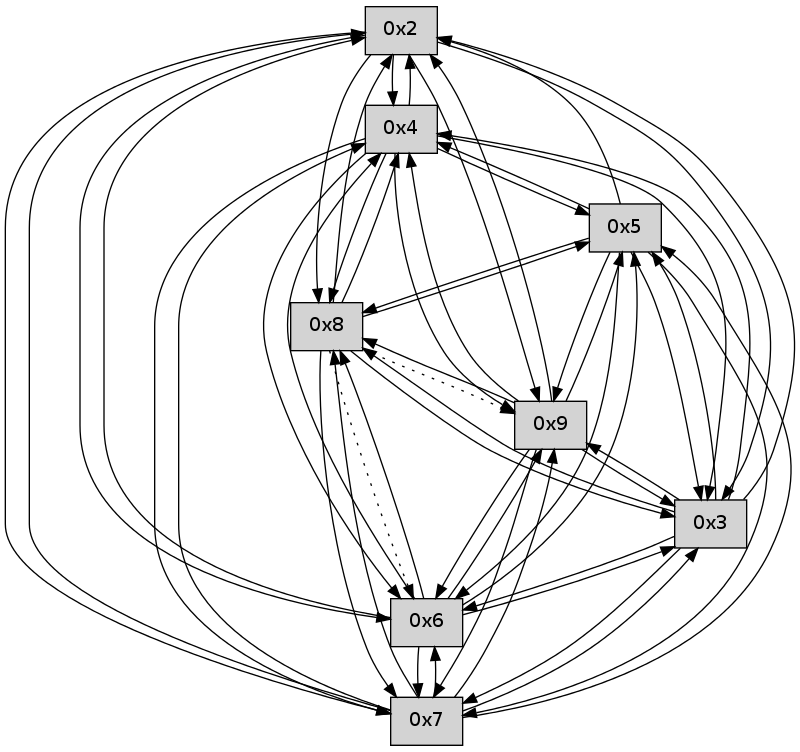

>> << IDX [start] -25 -5 +0 +5 +25 +100 [90.3009850979]
 Previous packets
----------------------------------------------------------------------
85.302104 beacon01(faad) #0 coord=01,02,03,04,05,06,07,09,08 cycle=624.0ms assoc
-- color-indic=0 64 4f 93
85.312082 beacon02(faad) #0 coord=01,02,03,04,05,06,07,09,08 cycle=624.0ms assoc 64 5f 22
85.322083 beacon03(faad) #0 coord=01,02,03,04,05,06,07,09,08 cycle=624.0ms assoc 64 39 ad
85.332082 beacon04(faad) #0 coord=01,02,03,04,05,06,07,09,08 cycle=624.0ms assoc 64 38 19
85.342083 beacon05(faad) #0 coord=01,02,03,04,05,06,07,09,08 cycle=624.0ms assoc 64 5e 96
85.352083 beacon06(faad) #0 coord=01,02,03,04,05,06,07,09,08 cycle=624.0ms assoc 64 e5 0f
85.362084 beacon07(faad) #0 coord=01,02,03,04,05,06,07,09,08 cycle=624.0ms assoc 64 83 80
85.372088 beacon09(faad) #0 coord=01,02,03,04,05,06,07,09,08 cycle=624.0ms assoc 64 90 e0
85.382089 beacon08(faad) #0 coord=01,02,03,04,05,06,07,09,08 cycle=624.0ms assoc 64 f6 6f
85.393201 [Hello(4): seq=60 sym=5,7,6,2,3,9,8 sysInfo= stat=5:8,0,0,0/7:4,0,0,0/6:11,0,0,0/2:8,0,0,0/3:9,0,0,0/9:1,0,0,0/8:0,0,0,0]
85.396348 [Hello(5): seq=60 sym=7,6,4,2,3,9,8 sysInfo= stat=7:9,0,0,0/6:4,0,0,0/4:1,0,0,0/2:1,0,0,0/3:0,0,0,0/9:1,0,0,0/8:0,0,0,0]
85.399107 [Hello(3): seq=60 sym=5,7,6,4,2,8,9 sysInfo= stat=5:4,0,0,0/7:4,0,0,0/6:8,0,0,0/4:5,0,0,0/2:8,0,0,0/8:1,0,0,0/9:0,0,0,0]
85.403199 [Hello(2): seq=60 sym=4,5,7,6,3,9,8 sysInfo= stat=4:6,0,0,0/5:5,0,0,0/7:11,0,0,0/6:4,0,0,0/3:12,0,0,0/9:1,0,0,0/8:0,0,0,0]
----------------------------------------------------------------------
86.016229 beacon01(faad) #0 coord=01,02,03,04,05,06,07,09,08 cycle=624.0ms assoc
-- color-indic=0 64 df 4f
86.026207 beacon02(faad) #0 coord=01,02,03,04,05,06,07,09,08 cycle=624.0ms assoc 64 cf fe
86.036206 beacon03(faad) #0 coord=01,02,03,04,05,06,07,09,08 cycle=624.0ms assoc 64 a9 71
86.046208 beacon04(faad) #0 coord=01,02,03,04,05,06,07,09,08 cycle=624.0ms assoc 64 a8 c5
86.056208 beacon05(faad) #0 coord=01,02,03,04,05,06,07,09,08 cycle=624.0ms assoc 64 ce 4a
86.066210 beacon06(faad) #0 coord=01,02,03,04,05,06,07,09,08 cycle=624.0ms assoc 64 75 d3
86.076209 beacon07(faad) #0 coord=01,02,03,04,05,06,07,09,08 cycle=624.0ms assoc 64 13 5c
86.086215 beacon09(faad) #0 coord=01,02,03,04,05,06,07,09,08 cycle=624.0ms assoc 64 00 3c
86.096212 beacon08(faad) #0 coord=01,02,03,04,05,06,07,09,08 cycle=624.0ms assoc 64 66 b3
86.107353 [Hello(8): seq=2 sym=5,2,3,4 asym=7,6,9 sysInfo= stat=5:2,0,0,0/2:2,0,0,0/3:2,0,0,0/4:2,0,0,0/7:0,0,0,0/6:1,0,0,0/9:0,0,0,0]
86.111940 [Hello(7): seq=60 sym=2,3,5,6,4,8,9 sysInfo= stat=2:9,0,0,0/3:5,0,0,0/5:5,0,0,0/6:3,0,0,0/4:5,0,0,0/8:0,0,0,0/9:0,0,0,0]
86.115291 [Hello(9): seq=2 sym=5,2,3,4 asym=7,6 sysInfo= stat=5:2,0,0,0/2:2,0,0,0/3:2,0,0,0/4:2,0,0,0/7:0,0,0,0/6:0,0,0,0]
----------------------------------------------------------------------
86.730357 beacon01(faad) #0 coord=01,02,03,04,05,06,07,09,08 cycle=624.0ms assoc
-- color-indic=0 64 7e 22
86.740335 beacon02(faad) #0 coord=01,02,03,04,05,06,07,09,08 cycle=624.0ms assoc 64 6e 93
86.750334 beacon03(faad) #0 coord=01,02,03,04,05,06,07,09,08 cycle=624.0ms assoc 64 08 1c
86.760337 beacon04(faad) #0 coord=01,02,03,04,05,06,07,09,08 cycle=624.0ms assoc 64 09 a8
86.770336 beacon05(faad) #0 coord=01,02,03,04,05,06,07,09,08 cycle=624.0ms assoc 64 6f 27
86.780336 beacon06(faad) #0 coord=01,02,03,04,05,06,07,09,08 cycle=624.0ms assoc 64 d4 be
86.790337 beacon07(faad) #0 coord=01,02,03,04,05,06,07,09,08 cycle=624.0ms assoc 64 b2 31
86.800340 beacon09(faad) #0 coord=01,02,03,04,05,06,07,09,08 cycle=624.0ms assoc 64 a1 51
86.810340 beacon08(faad) #0 coord=01,02,03,04,05,06,07,09,08 cycle=624.0ms assoc 64 c7 de
86.821463 [Hello(3): seq=61 sym=5,7,6,4,2,8,9 sysInfo= stat=5:4,0,0,0/7:4,0,0,0/6:9,0,0,0/4:5,0,0,0/2:9,0,0,0/8:2,0,0,0/9:1,0,0,0]
86.823704 [Hello(5): seq=61 sym=7,6,4,2,3,9,8 sysInfo= stat=7:9,0,0,0/6:5,0,0,0/4:1,0,0,0/2:2,0,0,0/3:1,0,0,0/9:2,0,0,0/8:1,0,0,0]
86.830171 [Hello(2): seq=61 sym=4,5,7,6,3,9,8 sysInfo= stat=4:6,0,0,0/5:5,0,0,0/7:12,0,0,0/6:4,0,0,0/3:12,0,0,0/9:2,0,0,0/8:1,0,0,0]
86.833566 [Hello(4): seq=61 sym=5,7,6,2,3,9,8 sysInfo= stat=5:9,0,0,0/7:4,0,0,0/6:12,0,0,0/2:9,0,0,0/3:10,0,0,0/9:2,0,0,0/8:1,0,0,0]
----------------------------------------------------------------------
87.444483 beacon01(faad) #0 coord=01,02,03,04,05,06,07,09,08 cycle=624.0ms assoc
-- color-indic=0 64 ee fe
87.454460 beacon02(faad) #0 coord=01,02,03,04,05,06,07,09,08 cycle=624.0ms assoc 64 fe 4f
87.464460 beacon03(faad) #0 coord=01,02,03,04,05,06,07,09,08 cycle=624.0ms assoc 64 98 c0
87.474461 beacon04(faad) #0 coord=01,02,03,04,05,06,07,09,08 cycle=624.0ms assoc 64 99 74
87.484462 beacon05(faad) #0 coord=01,02,03,04,05,06,07,09,08 cycle=624.0ms assoc 64 ff fb
87.494460 beacon06(faad) #0 coord=01,02,03,04,05,06,07,09,08 cycle=624.0ms assoc 64 44 62
87.504462 beacon07(faad) #0 coord=01,02,03,04,05,06,07,09,08 cycle=624.0ms assoc 64 22 ed
87.514467 beacon09(faad) #0 coord=01,02,03,04,05,06,07,09,08 cycle=624.0ms assoc 64 31 8d
87.524468 beacon08(faad) #0 coord=01,02,03,04,05,06,07,09,08 cycle=624.0ms assoc 64 57 02
87.535910 [Hello(9): seq=3 sym=5,2,3,4 asym=7,6 sysInfo= stat=5:3,0,0,0/2:3,0,0,0/3:3,0,0,0/4:3,0,0,0/7:0,0,0,0/6:0,0,0,0]
87.538260 [Hello(6): seq=61 sym=2,3,5,4,7,9 sysInfo= stat=2:7,0,0,0/3:6,0,0,0/5:6,0,0,0/4:6,0,0,0/7:0,0,0,0/9:1,0,0,0]
87.541193 [Hello(8): seq=3 sym=5,2,3,4 asym=7,6,9 sysInfo= stat=5:3,0,0,0/2:3,0,0,0/3:3,0,0,0/4:3,0,0,0/7:0,0,0,0/6:2,0,0,0/9:1,0,0,0]
87.545119 [Hello(7): seq=61 sym=2,3,5,6,4,8,9 sysInfo= stat=2:10,0,0,0/3:6,0,0,0/5:6,0,0,0/6:3,0,0,0/4:6,0,0,0/8:0,0,0,0/9:1,0,0,0]
----------------------------------------------------------------------
88.158608 beacon01(faad) #0 coord=01,02,03,04,05,06,07,09,08 cycle=624.0ms assoc
-- color-indic=0 64 ac c7
88.168586 beacon02(faad) #0 coord=01,02,03,04,05,06,07,09,08 cycle=624.0ms assoc 64 bc 76
88.178586 beacon03(faad) #0 coord=01,02,03,04,05,06,07,09,08 cycle=624.0ms assoc 64 da f9
88.188587 beacon04(faad) #0 coord=01,02,03,04,05,06,07,09,08 cycle=624.0ms assoc 64 db 4d
88.198587 beacon05(faad) #0 coord=01,02,03,04,05,06,07,09,08 cycle=624.0ms assoc 64 bd c2
88.208588 beacon06(faad) #0 coord=01,02,03,04,05,06,07,09,08 cycle=624.0ms assoc 64 06 5b
88.218587 beacon07(faad) #0 coord=01,02,03,04,05,06,07,09,08 cycle=624.0ms assoc 64 60 d4
88.228565 beacon09(faad) #0 coord=01,02,03,04,05,06,07,09,08 cycle=624.0ms assoc 64 73 b4
88.238591 beacon08(faad) #0 coord=01,02,03,04,05,06,07,09,08 cycle=624.0ms assoc 64 15 3b
88.252713 [Hello(4): seq=62 sym=5,7,6,2,3,9,8 sysInfo= stat=5:9,0,0,0/7:5,0,0,0/6:13,0,0,0/2:9,0,0,0/3:10,0,0,0/9:3,0,0,0/8:2,0,0,0]
88.255599 [Hello(3): seq=62 sym=5,7,6,4,2,8,9 sysInfo= stat=5:5,0,0,0/7:5,0,0,0/6:10,0,0,0/4:6,0,0,0/2:10,0,0,0/8:3,0,0,0/9:2,0,0,0]
----------------------------------------------------------------------
88.872734 beacon01(faad) #0 coord=01,02,03,04,05,06,07,09,08 cycle=624.0ms assoc
-- color-indic=0 64 3c 1b
88.882711 beacon02(faad) #0 coord=01,02,03,04,05,06,07,09,08 cycle=624.0ms assoc 64 2c aa
88.892711 beacon03(faad) #0 coord=01,02,03,04,05,06,07,09,08 cycle=624.0ms assoc 64 4a 25
88.902711 beacon04(faad) #0 coord=01,02,03,04,05,06,07,09,08 cycle=624.0ms assoc 64 4b 91
88.912713 beacon05(faad) #0 coord=01,02,03,04,05,06,07,09,08 cycle=624.0ms assoc 64 2d 1e
88.922711 beacon06(faad) #0 coord=01,02,03,04,05,06,07,09,08 cycle=624.0ms assoc 64 96 87
88.932716 beacon07(faad) #0 coord=01,02,03,04,05,06,07,09,08 cycle=624.0ms assoc 64 f0 08
88.942717 beacon09(faad) #0 coord=01,02,03,04,05,06,07,09,08 cycle=624.0ms assoc 64 e3 68
88.952718 beacon08(faad) #0 coord=01,02,03,04,05,06,07,09,08 cycle=624.0ms assoc 64 85 e7
88.963843 [Hello(7): seq=62 sym=2,3,5,6,4,8,9 sysInfo= stat=2:11,0,0,0/3:7,0,0,0/5:6,0,0,0/6:3,0,0,0/4:7,0,0,0/8:0,0,0,0/9:1,0,0,0]
88.968420 [Hello(9): seq=4 sym=5,2,3,4,7,6,8 sysInfo= stat=5:4,0,0,0/2:3,0,0,0/3:4,0,0,0/4:4,0,0,0/7:1,0,0,0/6:1,0,0,0/8:0,0,0,0]
88.971453 [Hello(6): seq=62 sym=2,3,5,4,7,9,8 sysInfo= stat=2:7,0,0,0/3:7,0,0,0/5:6,0,0,0/4:7,0,0,0/7:1,0,0,0/9:1,0,0,0/8:0,0,0,0]
88.974679 [Hello(8): seq=4 sym=5,2,3,4,7 asym=6,9 sysInfo= stat=5:3,0,0,0/2:4,0,0,0/3:4,0,0,0/4:4,0,0,0/7:1,0,0,0/6:2,0,0,0/9:1,0,0,0]
----------------------------------------------------------------------
89.586859 beacon01(faad) #0 coord=01,02,03,04,05,06,07,09,08 cycle=624.0ms assoc
-- color-indic=0 64 9d 76
89.596836 beacon02(faad) #0 coord=01,02,03,04,05,06,07,09,08 cycle=624.0ms assoc 64 8d c7
89.606837 beacon03(faad) #0 coord=01,02,03,04,05,06,07,09,08 cycle=624.0ms assoc 64 eb 48
89.616838 beacon04(faad) #0 coord=01,02,03,04,05,06,07,09,08 cycle=624.0ms assoc 64 ea fc
89.626838 beacon05(faad) #0 coord=01,02,03,04,05,06,07,09,08 cycle=624.0ms assoc 64 8c 73
89.636839 beacon06(faad) #0 coord=01,02,03,04,05,06,07,09,08 cycle=624.0ms assoc 64 37 ea
89.646838 beacon07(faad) #0 coord=01,02,03,04,05,06,07,09,08 cycle=624.0ms assoc 64 51 65
89.656843 beacon09(faad) #0 coord=01,02,03,04,05,06,07,09,08 cycle=624.0ms assoc 64 42 05
89.666841 beacon08(faad) #0 coord=01,02,03,04,05,06,07,09,08 cycle=624.0ms assoc 64 24 8a
89.677965 [Hello(4): seq=63 sym=5,7,6,2,3,9,8 sysInfo= stat=5:9,0,0,0/7:6,0,0,0/6:14,0,0,0/2:9,0,0,0/3:11,0,0,0/9:4,0,0,0/8:3,0,0,0]
89.680631 [Hello(2): seq=63 sym=4,7,6,3,9,8 sysInfo= stat=4:8,0,0,0/7:14,0,0,0/6:6,0,0,0/3:13,0,0,0/9:4,0,0,0/8:3,0,0,0]
89.684496 [Hello(3): seq=63 sym=5,7,6,4,2,8,9 sysInfo= stat=5:5,0,0,0/7:6,0,0,0/6:11,0,0,0/4:6,0,0,0/2:10,0,0,0/8:4,0,0,0/9:3,0,0,0]
89.690971 [Hello(5): seq=63 sym=7,6,4,2,3,9,8 sysInfo= stat=7:11,0,0,0/6:7,0,0,0/4:3,0,0,0/2:3,0,0,0/3:2,0,0,0/9:4,0,0,0/8:3,0,0,0]